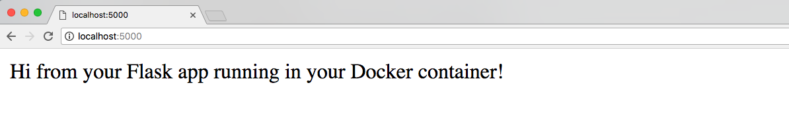

当我们刚刚开始使用容器时，将 Docker 添加到 Python 和 Flask 开发环境可能会有一点困难。这篇博客，我们快速安装并配置Docker，以便在本地系统上开发Flask Web应用程序。
Our Tools
本教程是为Python 3编写的。我还没有通过即将被弃用的2.7版本进行测试。Docker for Mac是必要的，我会推荐稳定版本。
在Docker容器中，我们将使用：
- Python 3, slim-3.6.5 version
- Flask version 1.0.2
这篇博客中的实例代码可以在这里找到。
Dockerfile
Docker需要知道我们在容器中需要什么，这是 Dockerfile 的作用。
# this is an official Python runtime, used as the parent image
FROM python:3.6.4-slim
# set the working directory in the container to /app
WORKDIR /app
# add the current directory to the container as /app
ADD . /app
# execute everyone's favorite pip command, pip install -r
RUN pip install --trusted-host pypi.python.org -r requirements.txt
# unblock port 80 for the Flask app to run on
EXPOSE 80
# execute the Flask app
CMD ["python", "app.py"]保存Dockerfile，以便我们可以使用完整的文件内容运行我们的下一个命令。 在命令行上运行：
docker build -t flask .上面的 -t 是为了给我们建立的 image 一个名字。
如果构建成功，我们可以使用 docker image ls 命令查看图像。 现在就试试看：
REPOSITORY TAG IMAGE ID CREATED SIZE
flask latest 24045e0464af 2 minutes ago 165MB我们的 image 已准备好作为容器加载了，因此我们可以编写一个快速 Flask 应用程序，我们将通过在容器中运行它来测试环境。
Coding A Simple Flask App
在当前项目目录中，使用以下内容创建一个名为 app.py 的文件：
from flask import Flask, Response
app = Flask(__name__)
@app.route("/")
def hello():
return Response("Hi from your Flask app running in your Docker container!")
if __name__ == "__main__":
app.run("0.0.0.0", port=80, debug=True)在 app.py 所在的目录中创建一个 requirements.txt 文件：
flask==1.0.2Running the Container
现在我们将手中的 image 与Python代码一起放入文件中，我们可以使用docker run命令将图像作为容器运行。 执行以下命令，确保将绝对路径替换为自己的目录。
docker run -p 5000:80 --volume=/Users/yufan/Documents/workspace/flaskdocker:/app flask然后打开浏览器，localhost:5000 就好啦。
